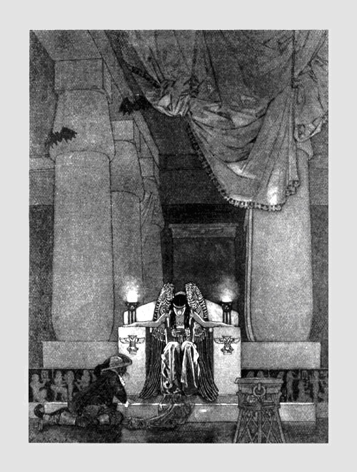

|
 Nội dung thủ bút: Sân bắn Bia lên ta thấy thân người Thấy ta thấy địch thấy đời lãng du Thấy tay dư thấy chân thừa Thấy tai nghễnh ngãng mắt mù óc không Một đời phơ phất hình nhân Thấy còn thấy hết sau cùng thấy đau Bia lên thấy mẹ u sầu Giấy bồi tơi tả cúi đầu trong ta Trời cao ngó xuống thịt da Bia lên trông cũng vật vờ cỏ xanh Bia lên tìm chỗ ta nằm Non cao duỗi cẳng em còn thấy đâu Hầm bia buồn đến mộ sâu Nghìn cây nến thắp trên đầu đạn bay. Nguyên Sa 1970 |
Nguyên Sa (Trần Bích Lan): Sinh năm 1932 tại Hà Nội
Tác phẩm: Thơ Nguyên Sa 1958,Gõ đầu trẻ (truyện) 1959,Quan điểm văn học và triết học (biên khảo) 1960, Mây bay đi (tập truyện) 1967, Một bông hồng cho văn nghệ (biên khảo) 1967, Descartes nhìn từ phương Đông (biên khảo) 1969
Nguyên Sa
Và ngôn ngữ tình yêu trong thi ca
Có lẽ, đã trên mười năm, vào buổi chiều Sài Gòn sau một cơn mưa lớn, tôi đang ngồi dưới mái hiên nhìn những vũng nước đục lầm trước nhà thì Mai Thảo đến thăm. Cùng đi với Mai Thảo có thêm một chàng trai phốp pháp có dáng dấp hồn nhiên. Mai Thảo giới thiệu – Nguyên Sa, người có thơ đăng trong Sáng Tạo mà cậu thích! Cái bắt tay lần đầu giữa tôi và Nguyên Sa thật là thắm thiết. Tôi nhìn chòng chọc vào Nguyên Sa đang đối diện, để chứng nghiệm lời Mai Thảo nói với tôi bữa trước, Nguyên Sa mới từ Pháp về, có tinh thần tiến bộ muốn đi cùng một đường với anh em.
Sau buổi tối hội ngộ đó, tôi đã coi Nguyên Sa như người bạn cũ. Tôi nhớ, trước khi về Nguyên Sa có tặng tôi một bài thơ mang tựa đề "Nga", in trên giấy láng, được dùng thay thiệp báo hỷ, ấn loát tại Ba-lê ngày 10-12-1955. Bài thơ này Nguyên Sa sáng tác tại Solden, No# 1954. Tôi yêu bài thơ đó lắm, tuy nội dung chưa vượt khỏi ước lệ thông thường với suy tư và rung cảm của một tình nhân đối với một tình nhân.
“Hôm nay Nga buồn như con chó ốm
Như con mèo ngái ngủ trong tay anh
Đôi mắt cá ươn ướt như sắp sửa se mình
Để anh giận sao chẳng là nước biển…”
Ngôn ngữ của Nguyên Sa trong bài thơ tuy không mới nhưng hình ảnh thật mới được lồng trong khuôn thức của nhịp điệu làm người đọc dễ rung cảm và lãnh hội.
“Em nhớ không đã có một lần anh van em
Đã có một lần lâu hơn cả ngày xưa…
Em sợ thời gian như mọt nhấm từng câu thơ
Em sợ thời gian ác như lửa thiêu từng thanh củi
Mắt e ngại như từng con chỉ rối
Em sợ những ngày trời nắng như hôm nay
Em sợ những đường tàu vướng víu như chỉ tay
Không dám chọn lấy một ga hò hẹn…”
Đọc thơ Nguyên Sa tôi có cảm tưởng như được thấy những ý nghĩ thầm kín của hồn mình. Nó gần gũi. Nó trẻ và sống. Nó chuyên chở từng dung nhan diễm tuyệt, ngay cả trong lo sợ. Mỗi dòng, mỗi chữ được Nguyên Sa cân nhắc và sử dụng linh động như nhà phù thuỷ cao tay sai khiến âm binh. Thơ Nguyên Sa không nóng bỏng, suồng sã, đam mê, khăng khít như Xuân Diệu hoặc thâm trầm, tế nhị, kiêu sa như Huy Cận mà nó luân lưu, uyển chuyển giữa hai dòng thơ lớn đó của thời tiền chiến. Tuy đã sống ở Paris nhiều năm, đã am hiểu văn hóa Tây phương nhất là triết học, mà Nguyên Sa lúc làm vần thơ vẫn giữ được cái phong thái của thi ca Việt Nam ngay cả ở những bài thơ mà Nguyên Sa đã sáng tác tại Kinh Đô Ánh Sáng:
“Mai tôi đi dù hôm nay đang vào thu
Dòng sông Seine đang mặc áo sương mù
Đang nhìn tôi mà khoe nước biếc
Khoe lá vàng lộng lẫy lối đi xưa…”
(“Paris”)
Paris với dòng sông Seine, với tháp Eiffel, với xóm Montmartre, với những thư viện, những bảo tàng, những mái giáo đường với sương mù tuyết trắng, với những nàng kiều nữ, với trăm vạn đam mê huyễn hoặc, mà sao Nguyên Sa chỉ dùng chúng trong thi ca như dùng những phương tiện để chuyên chở từng ý nghĩ Việt Nam, từng ngôn ngữ Việt Nam. Thi sĩ William Carlos đã nói đúng:“Sự sáng tạo ngôn ngữ mới cho thi ca, ở đó, các thi nhân Mỹ có thể viết ra được, chính là một ngôn ngữ mang biểu tượng nước Mỹ” (Jarell, Situation d’un Poète).
Xuyên qua ngôn ngữ Nguyên Sa, người đọc hình dung thấy một khung cửa bỏ ngỏ. Từ khung cửa đó, có thể nhìn ra một khu vườn với màu sắc chói chang, với muôn vàn cánh bướm đang múa lượn chập chờn làm rung động những đài hoa ngát nhuỵ. Những cánh bướm của tình yêu, của khát vọng, của dự tưởng, Nguyên Sa dang rộng đôi tay bé nhỏ muốn ôm vào lòng mình. Cái vũ trụ nào đó, mà Nguyên Sa đoán biết hay tìm thấy không phải cái vũ trụ được đo lường và ước đoán bằng chứng nghiệm toán học, bằng những năm ánh sáng, bằng vệ tinh, bằng phi thuyền. Vũ trụ ấy chẳng ai chứng minh được vì nó là Vũ trụ của Tình yêu, do tình yêu hình thành. Sartre nói – “Cái TA là do kẻ khác”. Cái nguyên lý này, Nguyên Sa là người biết rõ hơn ai hết. Nguyên Sa biết triết học trước khi biết làm thơ. Hình ảnh chói loà của Socrate, Platon, Kant, Nietzsche, Heidegger, Bergson, Russel, Jaspers, Sartre v.v… với các triết thuyết cao siêu mà các vị đó đã để lại cho nhân loại, hình như chẳng có chút liên hệ gì trong địa hạt thi ca, một địa hạt mà Nguyên Sa coi như cứu cánh của đời mình. Điều nói đó có thể không đúng hẳn, nhưng xuyên qua thi phẩm Nguyên Sa, người đọc chưa chiếu rọi hay khám phá được màu sắc triết học hay hướng đến triết học.
Nguyên Sa đi vào thi ca với những bước chân mang nhiều ân tình cho kẻ khác. Kẻ khác, đương nhiên là người con gái, là Tình yêu. Tình yêu đối với Nguyên Sa như ân sủng, như nguồn thương vô tận, với ngọt ngào môi hôn, với bấn loạn tâm hồn, với quấn quít vòng tay, với dịu hiền hơi thở. Sự kiện này rất tự nhiên và bản chất Nguyên Sa như vậy.
“Nắng Sài Gòn anh đi mà chợt mát
Bởi vì em mặc áo lụa Hà Đông
Anh vẫn yêu màu áo ấy vô cùng
Thơ của anh vẫn còn nguyên lụa trắng
Anh vẫn nhớ em ngồi đây tóc ngắn
Mà mùa thu dài lắm ở chung quanh
Linh hồn anh vội vã vẽ chân dung
Bày vội vã vào trong hồn mở cửa…"
("Áo lụa Hà Đông")
Chất thơ Nguyên Sa là chất thơ thuần tuý, ở đó, mỗi âm thanh, mỗi ngôn ngữ như một lời kể lể, một cầu xin, một đắm đuối. Tình yêu là chuyện muôn thuở, chẳng phải chỉ Nguyên Sa mới tỏ bày lần thứ nhất, mà con người ở mỗi thời đại có nhiệm vụ làm-mới-lại những cái gì của-hôm-qua với khả năng nghệ thuật vô biên. Goethe nói: “Thiên nhiên vẫn y nguyên, nhưng nhãn quan của mỗi con người làm thay đổi thiên nhiên” “Goethe et la littérature universelle. Thornton Wilder). Trong tình yêu cũng vậy, tình yêu vẫn thế nhưng mỗi kẻ tình nhân làm tình yêu đổi mới:
“Hãy dựa tóc vào vai cho thuyền ghé bến
Hãy nhìn nhau mà sưởi ấm trời mưa
Hãy gửi cho nhau từng hơi thở mùa thu
Có gió heo may và nắng vàng rất nhẹ
Và hãy nói năng những lời vô nghĩa
Hãy cười bằng mắt, ngủ bằng vai
Hãy để môi rót rượu vào môi
Hãy cầm tay bằng ngón tay bấn loạn
Gió có lạnh hãy cầm tay cho chặt
Đêm có khuya hãy ngủ cho ngoan
Hãy biến cuộc đời thành những tối tân hôn
Nếu em sợ thời gian dài vô tận…"
("Tháng sáu trời mưa")
“Hãy để môi rót rượu vào môi” và “biến cuộc đời thành những tối tân hôn” quả thật Nguyên Sa đã sử dụng ngôn ngữ thi ca một cách tài tình dù rằng ngôn ngữ đó để chuyển đạt một ý nghĩ rất Tây phương. Theo Randall Jarrell, thi sĩ là một kẻ sáng tạo, một nguyên trinh (pureté), một kiến trúc sư của kỹ thuật thi ca. Nguyên Sa đã tự sáng tạo và giành lấy đặc quyền trong lãnh vực tình yêu, dù tình yêu đôi khi chỉ là ảo ảnh, là nỗi buồn thảm, tối tăm của thất vọng và đớn đau, chia cách. Thơ Nguyên Sa toát ra sự mong manh, rạn vỡ ngay cả trong hy vọng đợi chờ.
“Em chói sáng trong tình anh cô độc
Cả cuộc đời mộng ảo nhớn bùng lên…
… Em đến chưa? Sao đêm chợt vắng
Cả cuộc đời xáo động cũng hao đi
Những ngón tay dần chẳng đến hôn mê
Và tà áo phủ chân trời trước mặt”.
("Người em sống trong cô độc")
Trong bài thuyết minh nhân dịp tưởng niệm Goethe tại Aspen (Colorado) năm 1949, Wilder có nhắc lại câu nói của Goethe “Trí não con người làm văn học nghệ thuật giống như một thùng chứa những mảnh giấy được bóc ra khỏi cuốn bách khoa vĩ đại, những mảnh giấy đó không phải chỉ chứa đựng sự ghi nhớ thông thường mà đích thực ở mỗi tờ đều toát ra và rung lên cảm xúc, nó có thể là liều thuốc hay niềm an ủi, cũng có thể là lời báo trước một bi thảm...”. (Goethe et la littérature Universelle, Protil, no 1)
Người làm thơ cũng phải gỡ ra khỏi hồn mình những chất liệu để cấu tạo nghệ thuật. Nguyên Sa bóc năm tháng của cuộc sống riêng tư để ca tụng tình yêu, để trải tâm sự qua từng niềm thương, nỗi nhớ, qua từng giọt sữa yêu đương cũng như nỗi buồn mật đắng:
“Em đứng lẩn bên góc hè phố vắng
Như loài hoa hoang dại trong rừng sâu
Màu da tơ bóng tối ngả u sầu
Đôi mắt đẹp từng cánh sao tắt lịm
Em đứng đợi một người không hẹn đến
Bán cho người tất cả những niềm vui
… Đêm gần tàn em ơi người gái đĩ
Đợi trong khuya bến vắng ngủ say rồi
Nhìn ánh đèn vương lại cửa nhà ai
Rồi kéo vội khăn quàng trên vai lạnh…”
("Đợi khách")
Tình yêu đối với Nguyên Sa đẹp như một nàng công chúa mới lên ngôi, nhưng có lúc nó biến thành tình thương khi Nguyên Sa bắt gặp cuộc đời có mặt với những giận hờn, ti tiện, bon chen, đố kỵ do những ước lệ xã hội tạo nên… Nói cho đúng, Nguyên Sa là một thi sĩ gặp nhiều may mắn ở cuộc đời cũng như ở nghệ thuật. Sự cúi xuống tình thương chỉ do từ tâm – một ngoại lệ. Vì đó, niềm xót xa mà Nguyên Sa diễn đạt bằng ngôn ngữ thi ca chỉ mang giá trị tương đối. Người đọc chỉ cảm thấy hay chứ không xúc động, vì Nguyên Sa đã biến đổi nó thành vóc dáng khác, ở đó, cái “nhìn” và cái “nhận” không còn nằm ở vị trí “khách thể” nữa. Nhưng có điều mọi người chắc chắn đều nhận ra, những nỗi buồn thảm và tối tăm của sự vật cũng như cuộc sống thường gặp lại ở những bài thơ hay, do đó, sự nghiêng xuống khổ đau đối với thi nhân chỉ được xem như thường tình.
Chính vì chất thơ của Nguyên Sa không nằm ngoài vị trí tình yêu nên ngôn ngữ tình ái trong thơ Nguyên Sa được sử dụng với tất cả tài hoa của một tâm hồn phóng khoáng muốn dùng khả năng hữu hạn của ngôn ngữ để vẽ chân dung tình yêu với tất cả cảm xúc lúc nào cũng tràn dâng làm ngập lụt linh hồn:
“Không có anh lấy ai đưa em đi học về
Lấy ai viết thư cho em mang vào lớp học
Ai lau mắt cho em ngồi khóc
Ai đưa em đi chơi trong chiều mưa
Những lúc em cười trong đêm khuya
Lấy ai nhìn những đường răng em trắng
Đôi mắt sáng là hành tinh lóng lánh
Lúc sương mờ ai thở để sương tan
Ai cầm tay cho đỏ má hồng em
Ai thở nhẹ cho mây vào trong tóc…”
("Cần thiết")
Đoạn thơ trên, Nguyên Sa đi rất gần Tế Hanh tác giả thi phẩm Hoa niên thời tiền chiến. Tuổi trẻ nào chả vậy, bước chân thứ nhất vào đời qua ngưỡng cửa nhớ mong, sầu mộng, qua “trời hải đảo”, “tóc bồng bềnh” với “lá gió trăm cây” với “mây trắng lênh đênh” để “lời ngỏ ý sẽ là kinh cầu nguyện”. Nhưng Nguyên Sa, một thi sĩ đã hiểu thấu đáo về luật thời gian, đã hiểu rõ thân phận mình và kẻ khác, chẳng phải do Triết học hay Khoa học mà chính nỗi ưu tư, phiền muộn do chính thực tế trao gửi. Chiếc bong bóng tình yêu của thi sĩ thả lên trời cao để mặc cho gió đẩy đưa, mặc cho giông gió huỷ hoại trong nỗi bàng hoàng của biệt ly, của thất bại:
“Người về đêm nay hay đêm mai
Người sắp đi chưa hay đã đi rồi
Muôn vị hành tinh rung nhè nhẹ
Hay ly rượu tàn run trên môi…
Tôi muốn hỏi thầm người rất nhẹ
Tôi đưa người hay tôi đưa tôi?...”
(“Tiễn biệt”)
Nguyên Sa vào đối với bản tình ca trên môi, với lời chào trong mắt, với bước chân quấn quít. Nguyên Sa sợ thời gian, sợ tan biến, sợ hư không, do đó, mỗi lời nói trao duyên, mỗi lần tình tự, người đọc nhận thấy sự vội vàng, sự níu kéo xen vào nỗi buồn rờn rợn như sắp đánh mất hay bị cướp đi sự quý báu thiêng liêng tưởng như đã thuộc-riêng-mình. Thơ Nguyên Sa hiện diện giữa cuộc đời với sự mong manh đó. Người đọc nhìn nó trong suốt như nhìn qua tấm pha lê có chạm trổ những hình nét tuyệt luân, nhưng chỉ một vô ý cỏn con tấm pha lê đó sẽ biến thành những mảnh thuỷ tinh nát vụn. Làm thơ không phải là công việc của riêng cá nhân hay của một thời đại nào nhất định. Sự hiện diện của thi ca, hàng loạt con người bất cứ ở đâu, bất cứ thời đại nào đều phải nhận rằng, năng khiếu thi ca không chỉ định một hiếm hoi hay để tán tụng một bài thơ diễm tuyệt. Tiếng nói của thi ca tuy không làm chủ được định mệnh nhưng nó có mặt để trình bày một giá trị, một lời an ủi dịu dàng làm nguôi ngoai đau khổ. Vì biết rõ giá trị tương đối của Thi ca đứng trước thực tế, trong phạm trù nhân sinh nên Nguyên Sa dùng nó để giải toả ẩn ức, giải toả mặc cảm mà mỗi con người phải cúi đầu vâng theo định luật thiên nhiên.
Nguyên Sa đã nhìn thấy “sa mạc hoang vu chạy suốt linh hồn” nghĩa là thi sĩ đã chấp nhận. Sự chấp nhận đây không phải là đầu hàng mà đích thực để hành động, để tránh né cái “không-thể-tránh” mong để lại những chứng tích thực thể trước cái yếu đuối của con người với ngàn vạn thất vọng, bi thương.
Vì quá yêu sự sống nên Nguyên Sa luôn luôn đẩy về phía trước những hy vọng:
“Tôi sẽ sang thăm em
Để những mái tóc màu củi chưa đun
Màu gỗ chưa ai ghép làm thuyền
Lùa vào nhau nhóm lửa…
Tôi sẽ sang thăm em
Để tình yêu đừng chua cay
Để tình yêu là sóng
Một dòng sông gặp gỡ một dòng sông…”.
(“Tôi sẽ sang thăm em”)
Sự yêu thương và niềm hy vọng như một động cơ luôn luôn nổ máy để lấn át mọi hệ luỵ do cuộc sống trôi dạt đến. Nguyên Sa thường cầu khẩn với lòng mình cũng như với người yêu:
“Và tôi vẫn xin em
Cho tôi ghì thật chặt
Như chiếc thắt lưng xanh
Ghì quanh lần áo vải
Cho tôi tìm một chữ mới
Không có trong hai mươi nhăm chữ cái
Để bắt đầu tên em:
.............................. ”.
(“Tự do”)
Ngay trong những đêm buồn thành phố, chán ngán cột đèn với những đại lộ quần chân, Nguyên Sa vùng dậy:
“Bằng hơi thở thiên thần
Bằng giọng nói đam mê
Bằng ngón tay mầu nhiệm
Ta truyền
Hỡi Sài Gòn ban đêm mở cửa!...”
Mở cửa để làm gì? Để thi sĩ “đi thanh tra những mái tóc bâng quơ, những cánh tay buồn, những mối sầu thơ dại!” để nghe ở đáy hồn cất lên tiếng nói: “Sao không mang nặng cặp mắt Trần Dần, cánh tay Phùng Quán với thân hình vạm vỡ tình yêu?” rồi tiếng nói vụt tắt, rồi xiềng xích áo cơm, danh vọng, bổn phận xiết lấy thân phận và chỉ có bóng đêm chứng kiến sự nổi loạn của tâm hồn cô độc trong nỗi nghẹn ngào chờ đợi bình minh.
Nguồn cảm hứng trong thơ Nguyên Sa như dòng sông lớn chảy phăng phăng ra biển cả, bỏ mặc hai bên những bến bờ nhân thế. Nhưng “nỗi niềm của một kiếp người đã nhiều tháng ngày ngồi trong ngõ tối, để suốt cả đời chờ đợi tin yêu” để nhìn “hy vọng bay theo từng hy vọng” đã làm Nguyên Sa vụt nghĩ đến cái chết. Cái chết mà Dante, thi hào Ý Đại Lợi ở đầu thế kỷ XIV thét lên – “Tôi không hiểu tại sao, sự chết đối với một số đông lại có nghĩa là bại trận!”. Nguyên Sa không có cái can đảm của Dante, nên khi nói về cái chết vẫn hình dung đến sự ghê gớm, lạnh lẽo với tiếc thương “trên ấy”.
“Anh cúi mặt hôn lên lòng đất
Sáng ngày mai giường ngủ lạnh côn trùng
Mười ngón tay sờ soạng giữa hư không
Đôi mắt đã trũng sâu buồn ảo ảnh.
Ở trên ấy mây mùa thu có lạnh
Anh nhìn lên mái cỏ kín chân trời
Em có ngồi mà nghe gió thu phai
Và em có thắp hương bằng mắt sáng?
Lúc ra đi hai chân anh đằng trước
Mắt đi sau còn vướng vất cuộc đời
Hai mươi năm, buồn ở đấy, trên vai
Thân thể nặng đóng đinh bằng tội lỗi
..............................
Những bài thơ anh đã viết trên môi
Lửa trái đất sẽ nung thành ảo ảnh…”
(“Lúc chết”)
Trong thơ Nguyên Sa người đọc ít tìm thấy sự bi thảm quá đỗi. Nỗi đau của Nguyên Sa đã biến thành cái đẹp, do đó, chả cứ gì cái chết mà ngay cả cuộc chiến đã từ mấy chục năm với dung nhan của đổ vỡ, chia lìa, với từng ngón hoài nghi đang len lách phá hoại, huỷ diệt nếp suy tư, đạo hạnh ở mỗi con người, chẳng hề làm thi sĩ bận tâm. Nếu có một dòng thơ nào phải nhắc đến chiến tranh, Nguyên Sa cố cho nó lướt nhanh và mờ đi ở giữa những hình ảnh và ý nghĩ dạt dào nóng bỏng môi hôn. Nguyên Sa đã sống ngoài cuộc sống và đặt thi ca vào vị trí đúng của nó trong môi trường vĩnh cửu.
“Cả mái tóc đã thành rừng lo ngại
Mỗi chân tơ có mong nhớ xanh um
Khi môi anh nặng trĩu trái thơm ngon
Khi em đến mang theo dòng nhựa ngọt
Huyết quản thành sông chảy linh hồn lá biếc
Cánh tay là cầu mang thương mến qua sông
Anh nghe thơ thức dậy tuổi mười lăm
Anh nghe em bước vào thơ xán lạn…”
(“Kỳ diệu”)
Ngôn ngữ tình yêu trong thơ Nguyên Sa chẳng riêng có những Kiều những Thu, những Loan, những Đam đã cho thi sĩ trời xanh và những nụ cười “thơm mùi tội lỗi”, ngôn ngữ ấy cũng chẳng phải để làm vui cho một “giải trí phường” mà đích thực “để dâng người lấy nửa dòng nước ngọt” cũng như thi sĩ “đến đây không ai mời, đi cũng đừng ai giữ, nếu có tạc tượng bằng đá trắng, đồng đen, cũng đừng bày ở sân trường đại học, đừng bày ở Công trường, xin nhớ để giùm ở một góc Công viên. Để những đêm khuya (rất khuya) thi sĩ có thể nhìn mặt trăng soi gương và ngắm những người yêu nhau tình tự”.
°
Tính đến hôm nay, thi phẩm của Nguyên Sa đóng góp với nền văn học nghệ thuật chỉ có mấy chục bài thơ mang tựa đề chung THƠ NGUYÊN SA. Đứng về số lượng, thành thực mà nói chưa nhiều, nhưng trong 10 năm qua nó đã tạo nên ảnh hưởng lớn lao đối với những người làm thơ và yêu thơ nhất là lứa tuổi thanh niên. Félix Arvers ở thế kỷ XIX lưu danh hậu thế chỉ có một bài Sonnet. Nguyên Sa đang và còn sống. Những bước chân dài rộng của thi sĩ có thể vượt những bước phi thường mà bây giờ chưa đoán biết. Ngoài tài làm thơ, Nguyên Sa còn viết văn, làm báo, mở trường và dạy triết.
Nhưng tất cả những công việc nói trên đều bị thi ca lấn lướt bôi nhòe nhoẹt vóc dáng. Nói đến Nguyên Sa là nói đến Thơ, đến tình yêu đôi mươi, nói đến một vòm trời Tình ái với “ngày tháng không thể làm mòn phai những lời đắm đuối”.
Do đó, Nguyên Sa đúng là thi sĩ của Tình yêu và Tuổi trẻ chẳng phải do hiện tại, còn cho ngày mai phía trước.
Trích thơ Nguyên Sa
Áo lụa Hà Đông
Nắng Sài Gòn anh đi mà chợt mát
Bởi vì em mặc áo lụa Hà Đông
Anh vẫn yêu màu áo ấy vô cùng
Thơ của anh vẫn còn nguyên lụa trắng
Anh vẫn nhớ em ngồi đây, tóc ngắn
Mà mùa thu dài lắm ở chung quanh
Linh hồn anh vội vã vẽ chân dung
Bày vội vã vào trong hồn mở cửa
Gặp một bữa anh đã mừng một bữa
Gặp hai hôm thành nhị hỉ của tâm hồn
Thơ học trò anh chất lại thành non
Và đôi mắt ngất ngây thành chất rượu
Em không nói đã nghe từng giai điệu
Em chưa nhìn mà đã động trời xanh
Anh đã trông lên bằng đôi mắt chung tình
Với tay trắng em vào thơ diễm tuyệt
Em chợt đến, chợt đi, anh vẫn biết
Trời chợt mưa, chợt nắng chẳng vì đâu
Nhưng sao đi mà không bảo gì nhau
Để anh gọi, tiếng thơ buồn vọng lại
Để anh giận mắt anh nhìn vụng dại
Giận thơ anh đã nói chẳng nên lời
Em đi rồi, sám hối chạy trên môi
Những ngày tháng trên vai buồn bỗng nặng
Em ở đâu hỡi mùa thu tóc ngắn
Giữ hộ anh màu áo lụa Hà Đông
Anh vẫn yêu màu áo ấy vô cùng
Giữ hộ anh bài thơ tình lụa trắng.
Bây giờ
Tặng Thái Thuỷ
Thế kỷ chúng tôi trót buồn trong mắt
Dăm bảy nụ cười không đủ xóa ưu tư
Tay quờ quạng cầm tay vài tiếng hát
Lúc xòe ra chẳng có một âm thừa
Cửa địa ngục ở hai bên lồng ngực
Phải vác theo trăm tuổi đường dài
Nên có gửi cho ai vài giọng nói
Cũng nghe buồn da diết chạy trên môi
Hai mắt rỗng phải che bằng khói thuốc
Chúng tôi nằm run sợ cả chiêm bao
Mỗi buổi sáng mặt trời làm sấm sét
Nên nhìn đêm mở cửa chẳng đi vào
Năm ngón tay có bốn mùa trái đất
Chúng tôi cầm rơi mất một mùa xuân
Cất tiếng đòi to. Tiếng đòi rơi rụng
Những âm thanh làm sẹo ở trong hồn
Chúng tôi trót ngẩng đầu nhìn trước mặt
Trán mênh mông va chạm cửa chân trời
Ngoảnh mặt lại đột nhiên thơ mầu nhiệm
Tiếng hát buồn đè xuống nặng đôi vai.
Mời
Tôi trân trọng mời em dự chuyến tàu tình ái.
Trong một phút, một giây cuộc hành trình sẽ mở. Tôi mời em. Trân trọng mời em cùng đi, cùng khai mạc cuộc đời.
Tôi mời em vứt bỏ lại đằng sau những kinh thành buồn bã với phong tục, thói lề, bạc vàng giả dối: muốn làm người yêu thì phải đỗ tú tài.
Tôi mời em đi ngay. Không cần lấy vé. Không phải đợi chờ vì điều kiện du hành là những ngón tay lồng vào nhau và tâm hồn đừng đơn chiếc.
Còn nếu cần thì tôi sẽ làm người bán vé. Nhưng tôi sẽ không quên làm người đồng hành duy nhất để đưa em đi. Và tôi sẽ làm người lái tàu để không ai được dự phần vào câu chuyện đôi ta.
Vé có thể là những lá thư xanh. Tàu là gian nhà rất nhỏ. Nhưng mỗi ga chắc chắn sẽ là những chiếc hôn nồng cháy cuộc đời.
Tôi mời em đi ngay. Em có thể đến đây với đôi giày gót cao để tôi tưởng mình em vóc hạc. Nhưng nếu em vội vã thì em cứ đi chân không. Tôi sẽ bọc mười đầu ngón chân với tất cả linh hồn say đắm yêu em.
Em có thể tôi môi son rất đỏ như khi đi dự một dạ yến tưng bừng. Em có thể để phấn hồng trên má, trên áo màu những vòng kim tuyến kết hoa đăng.
Nhưng nếu vội vàng mà em để vành môi tái nhợt, mớ tóc bù tung, thì có hại gì đâu em? Cuộc hành trình sẽ khởi về đêm khuya. Tôi không nhìn thấy má hồng non vì còn mải mê với tất cả em tràn đầy trong đáy mắt.
Tôi cũng rất vội vàng. Hành lý chỉ mang theo một vòng tay để ôm em, đôi mắt say sưa để thì thầm nói chuyện và đôi môi để kết hoa đám cưới trên vầng trán dịu hiền.
Em đi ngay đi.
Để tất cả gò má em ấp trên bàn tay tôi xóa hết những đường chỉ tay gian khổ.
Em đến ngay đi.
Em đến ngay cho cuộc hành trình được mở.
Gió được nổi lên từ mớ tóc phiêu bồng, thuyền dong thả từ đường môi óng ả. Và ngực căng buồm, mắt trông tìm vội vã:
Tôi đi vào kiều diễm của thân em.
Đám tang Nguyễn Duy Diễn
Diễn đã chết, Diễn đã chết
Chúng tôi nhảy múa hò reo
Như người người da đen
Chúng tôi nhảy múa hò reo
Thế là nó thoát, thế là nó thoát
Thế là nó thoát, đúng rồi, thế là nó thoát
Thoát khỏi ngủ, thoát khỏi ăn, khỏi thở
Khỏi đêm, khỏi ngày, khỏi tháng, khỏi năm
Khỏi chờ, khỏi đợi
Khỏi nhìn tình ái đội nón ra đi
Khỏi hy vọng ban mai, khỏi buồn thiu buổi tối
Thế là nó thoát, thế là nó thoát
Khỏi phải đi, khỏi phải đứng, khỏi phải ngồi
Khỏi bốn mươi giờ dạy học mỗi tuần
Khỏi viết ban đêm, khỏi đến nhà in buổi sáng
Hào quang danh vọng thả trôi sông, này nhìn vai nó nhẹ
Chiếc lưới mở rồi, thế là nó thoát anh em ơi…
Chiếc lưới mở ròi, thế là nó thoát
Khỏi phải nhìn, khỏi phải nghe, khỏi phải thấy
Những sự dơ bẩn và mặc,
Và mặc
Những thằng ghen tuông, những thằng chụp mũ
Những thằng ăn không nói có
Đã chém toàn quốc nát bầm hai vai
Thế là nó thoát, thế là nó thoát
Cuồng lưu dằn vặt đã trôi đi
Khỏi phải nghĩ, khỏi lo âu, sợ hãi
Sự thật có phải bao giờ cũng tối như đêm
Tình ái có phải suốt đời là canh bạc lận
Lịch sử, rút lại, có phải là thằng mù sờ soạng
Ném tất cả rồi, ném xuống biển sâu
Này nhìn hai vai nó nhẹ
Chiếc lưới đã mở rồi
Thế là nó thoát anh em ơi…
Khép
Khi cuốn sách được viết đến dòng cuối sau bao nhiêu cố gắng, kẻ viết bỗng cảm thấy tự thâm tâm dâng lên niềm vui thú vì không hiểu có sự kỳ diệu nào đã đẩy kẻ viết “kinh qua” những trở ngại thực tế thường khó vượt nổi.
Trong những giờ, những ngày tận của một năm sắp tàn, trong cái không khí khuấy động của đồng tiền gieo mạnh vào canh bạc đời, trong nỗi lo lắng chạy dài theo mỗi hình thể “lô-xô-bào-ảnh”, trong niềm băn khoăn giày vò tâm cảm do ngoại cảnh đưa tới, trong cái bâng khuâng không biết ngày mai việc gì sẽ đến, trong sự nghi hoặc làm rã rời ý nghĩ, trong miếng cơm manh áo với thân phận con người chẳng khác gì một sinh vật phải lệ thuộc vào một khung cảnh nhàm chán mà không có quyền chối bỏ.
Tập bản thảo nằm tênh hênh trên mặt bàn viết như một tội tình. Nó đấy. Nó là kết quả của những đêm mất ngủ, của những ngày đánh lạc thời gian bằng suy nghĩ. Nhưng nó có đây để làm gì, câu hỏi đó không thành vấn đề.
"Em yêu? Hôm nay mùa Xuân đã về rồi đây ư? Mùa Xuân, mùa Xuân, những ngày của trời cao và xanh thẳm, với những ân tình bay đi như từng cánh chim di thê trở về rừng cũ, với màu hoa sắc lá dạt dào thêm nhịp luân hành vũ trụ, với môi cười khoe ngọc lưu ly, và còn gì nữa, em yêu?"
Còn chứ, còn tiếng chim kêu đầu cành, còn cơn gió nhẹ thổi rơi dăm chiếc lá vàng, còn mùi hương thoảng nhẹ giữa không gian, còn ánh trăng suông lọt qua khuôn cửa lúc nửa đêm về sáng, còn cái nhìn đắm đuối, còn môi cười e ngại, bấy nhiêu xảy ra một cách tự nhiên và bình thản nhưng, đối với nghệ sĩ đó là những dấu hiệu, những chứng cớ để buộc họ vào một khung cảnh, một vị trí đích thực mà họ phải suy nghĩ về sự giao thoa giữa con người và sự mầu nhiệm của Tạo hóa.
Sự mầu nhiệm của Tạo hóa chẳng những làm đổi thay từng giá trị mà còn làm cho vạn vật chuyển mới luôn luôn, con người không thoát khỏi sự “hóa kiếp” từ từ và tàn nhẫn đó. Mới hôm nào, anh em quây quần cười cợt coi đời bằng “nửa khóe mắt”, tự vỗ ngực “tương lai là của chúng ta” mà nay nhìn lại, mái tóc đã bạc phơ, vóc dáng xô lệch đường năm tháng, ngó nhau với những tia mắt não nề để cười lên tiếng cười ngắt đoạn. Lần lượt rồi lần lượt tiếp nối kẻ trước người sau mãi mãi. Do đó, những câu nói đầu môi bao giờ cũng là: ngày trước… chúng mình…
Phải rồi, ngày trước, những ngày xa xưa của tuổi trẻ khi chợt bắt gặp qua-người-khác, làm cho gợn lên trong lòng một thoáng buồn, cái buồn tuy không đau nhưng man mác như mặt đại dương một sáng êm trời có những đợt sóng mơn man bờ cát. Nhưng cuộc sống đâu có giản dị như vậy, nó hiện diện với những ước lệ bắt con người phải chấp nhận từng nỗi vui buồn, nỗi vui buồn đó, nghệ sĩ không giữ lại làm của riêng tư mà phải đem trình bày để hình thành nghệ thuật.
Nghệ thuật chẳng là gì cả nếu nó không chứng minh được sự huyên náo trong lãnh vực chuyên môn để vượt thoát luật đào thải của tiến hóa. Bởi vậy, nói đến nghệ thuật là nói đến cái gì vĩnh viễn xuyên qua mọi ý thức, mọi không gian và thời gian.
Kẻ viết tự vỗ về bằng ảo giác cho no đầy hy vọng.
Mùa Xuân năm Canh Tuất
(Tháng 2-1970)
Nguồn: Tạ Tỵ. Mười khuôn mặt văn nghệ. Nam Chi xuất bản lần thứ nhất, tác giả trình bày hoạt hoạ. Ngoài những bản thường có thêm 5 bản đặc biệt trên giấy Ngân Nhũ mang chữ T.T., L.N.. – P.T.Đ., C.T., và V.T.H., 100 bản trên giấy Bạch Ngọc mang số từ T.T. 001 tới T.T. 100, dành cho bạn hữu. In xong tại Kim Lai ấn quán ngày 1 tháng 8 năm 1970. Giấy phép sở P.H.N.T. số 621 BTT/PHNT ngày 19 tháng 2 năm 1970. Tác giả giữ bản quyền, 1970. Cùng một tác giả: Những viên sỏi (Tập truyện), Nam Chi Tùng Thư, 1962; Yêu và thù (Tập truyện), Tủ sách Nam Chi, Cơ sở Phạm Quang Khai xuất bản, 1970. Bản điện tử do talawas thực hiện.